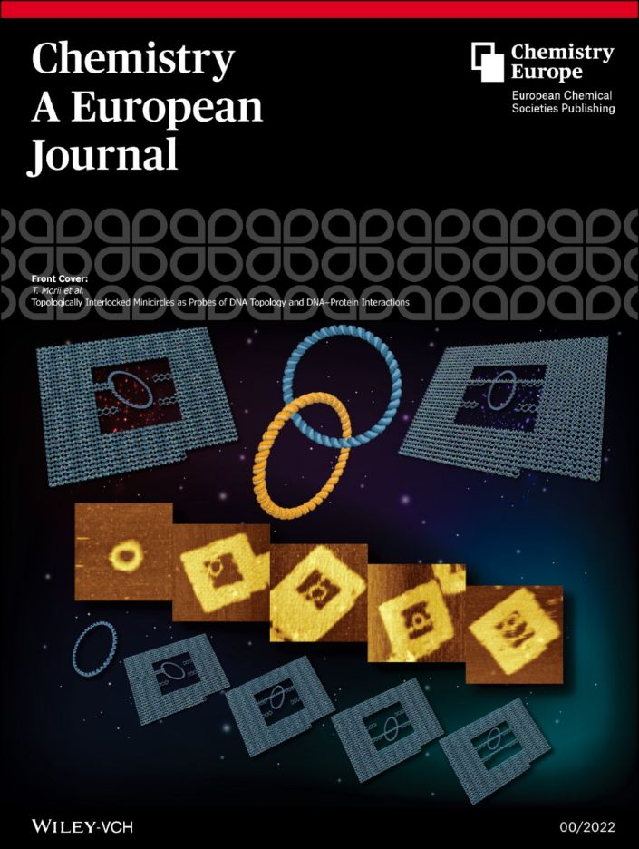

மூல Webnode சிறப்பம்சப் பக்கத்திலிருந்து இந்த முழுப் பட்டியல் தொகுக்கப்பட்டது. கிடைக்கும் இடங்களில் கட்டுரை, அட்டை மற்றும் சுயவிவரப் பதிவுகள் DOI அல்லது மூலப் பக்கத்துடன் இணைக்கப்பட்டுள்ளன.
- 2023–24
நிலைப்படுத்தப்பட்ட DNA ஒரிகாமி குறித்த சர்வதேச ஊடக மற்றும் நிறுவனச் செய்தியளிப்பு
கியோட்டோ பல்கலைக்கழகம், கியோட்டோ பல்கலைக்கழக செய்தித்தாள், JST Science Japan, MIT Technology Review Japan, ASCII.jp மற்றும் Nikkei.
- 2022
டோப்பாலஜி முறையில் ஒன்றோடொன்று இணைந்த சிறுவட்டங்கள் — ஆய்வுக் கட்டுரை, முன் அட்டை மற்றும் அட்டைப் சுயவிவரம்
Chemistry – A European Journal.
- 2018சுயவிவரம் ↗
ஆராய்ச்சியாளர் சுயவிவரம்: From mountains to oceans
Chemistry and Chemical Industry, CCI Salon, Vol. 71-9, p. 789.
- 2017DOI ↗
நியூக்ளிக் அமில வார்ப்புருவை அடிப்படையாகக் கொண்ட நொதி தொடர் வினைகள்
ChemBioChem மதிப்பாய்வு சிறப்பம்சம் மற்றும் Readers’ Choice 2019.
- 2017சான்றிதழ் ↗
முக்கிய உரைக்கான பாராட்டுச் சான்றிதழ்
ICEM–SFBMS, காவோஷியுங் மருத்துவ பல்கலைக்கழகம், தைவான்.
- 2014DOI ↗
அதிநவீன அதிவேக அணுவிசை நுண்ணோக்கி
Chemical Reviews பின்அட்டை சிறப்பம்சம்.
- 2012DOI ↗
அதிவேக AFM மூலம் புரதங்களின் கட்டமைப்பு மற்றும் செயல்பாட்டு பகுப்பாய்வு
Advances in Protein Chemistry and Structural Biology புத்தகத்தின் முன் மற்றும் பின்அட்டை சிறப்பம்சம்.
- 2012DOI ↗
DNA ஒரிகாமி பயன்படுத்திய ஒற்றை மூலக்கூறு பகுப்பாய்வு
Angewandte Chemie International Edition மதிப்பாய்வு சிறப்பம்சம்.
- 2011DOI ↗
DNA ஒரிகாமி ஜிக்சா துண்டுகளின் நிரலாக்கப்பட்ட இருபரிமாண சுயத் தொகுப்பு
ACS Nano முன் அட்டை மற்றும் FNANO-11 மாநாட்டு துண்டுப் பிரசுரம்.
- 2011விருது படம் ↗
சிறந்த போஸ்டர் வழங்கல் விருது
38th International Symposium on Nucleic Acids Chemistry (ISNAC 2011).
- 2008DOI ↗
Hot Article Award
Analytical Sciences, Vol. 24, Issue 6.